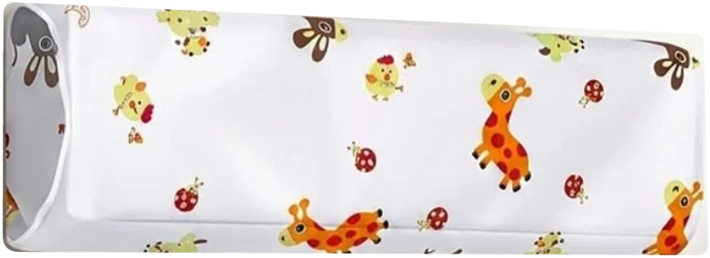
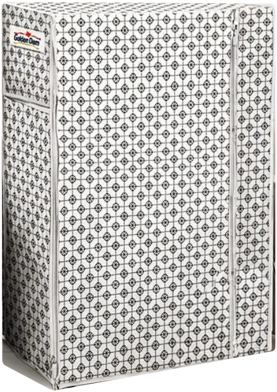
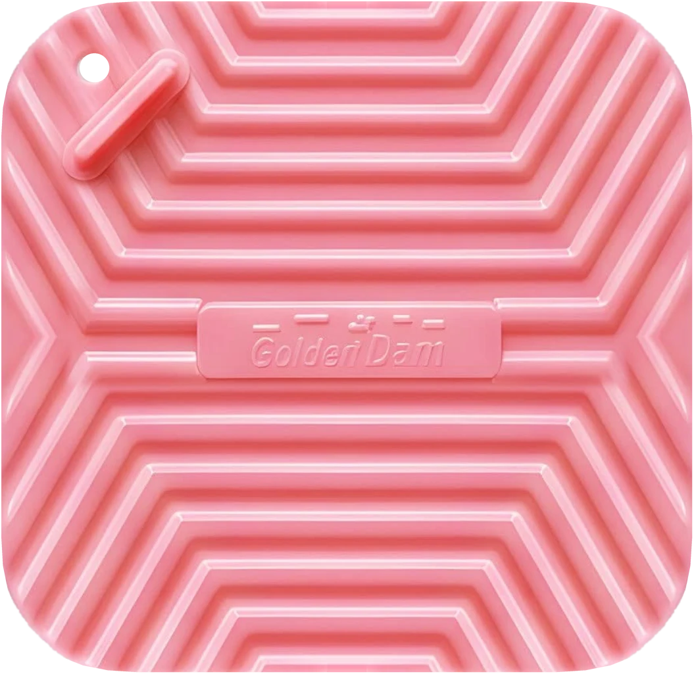
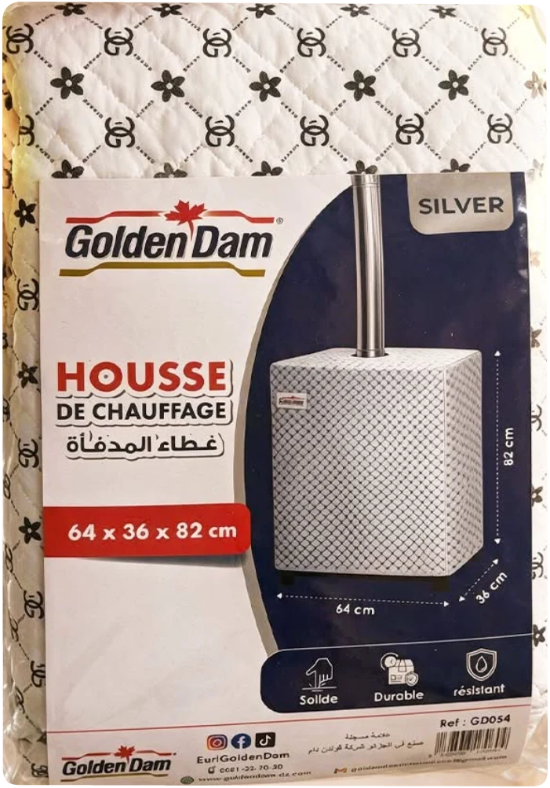
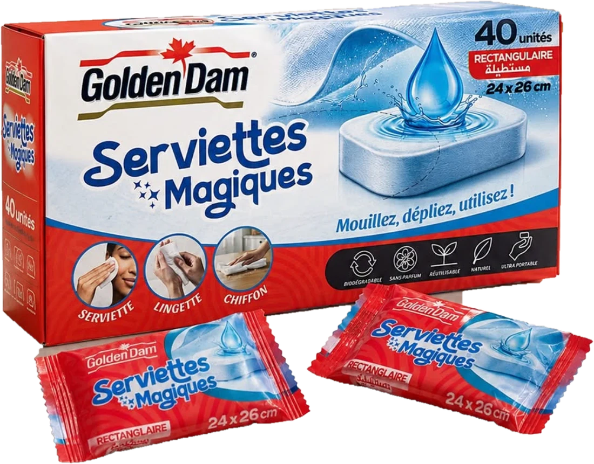
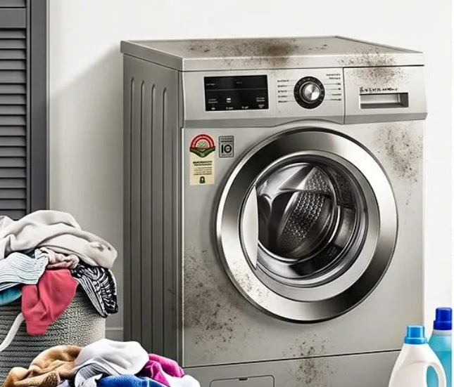
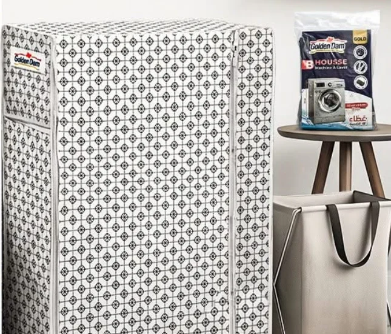

01 / 04
Salon & climatisation
Protégez vos climatiseurs toute l’année : housse pour le split intérieur, pare-soleil réfléchissant pour l’unité extérieure.

Accessoires ménagers fabriqués en Algérie depuis 2017 : ils protègent, rangent et nettoient. Faites tourner la gamme.
Protégez vos climatiseurs toute l’année : housse pour le split intérieur, pare-soleil réfléchissant pour l’unité extérieure.

La machine reste propre et sèche, le linge sèche vite, les vêtements trouvent leur place.

Un rideau imperméable et résistant, et un couvre-siphon qui bloque les odeurs et les insectes.

Quand l’hiver arrive, la housse matelassée habille et protège le chauffage d’appoint.

Compressées pour tenir dans la poche, elles se déplient au contact de l’eau : serviette, lingette ou chiffon. Essayez.

Glissez pour comparer : la machine exposée à la poussière et à l’eau, puis protégée par la housse Golden Dam (60 × 60 × 80 cm, jusqu’à 9 kg).


Couche d’aluminium réfléchissante et isolation en mousse EPE : le pare-soleil renvoie la chaleur et protège l’unité extérieure des UV.